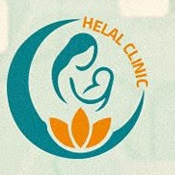
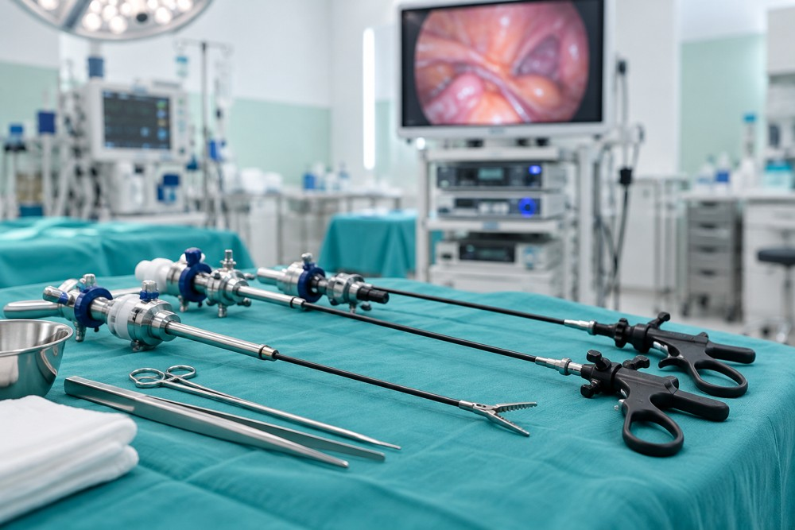
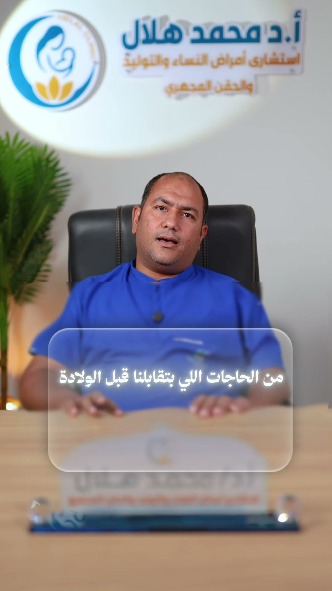
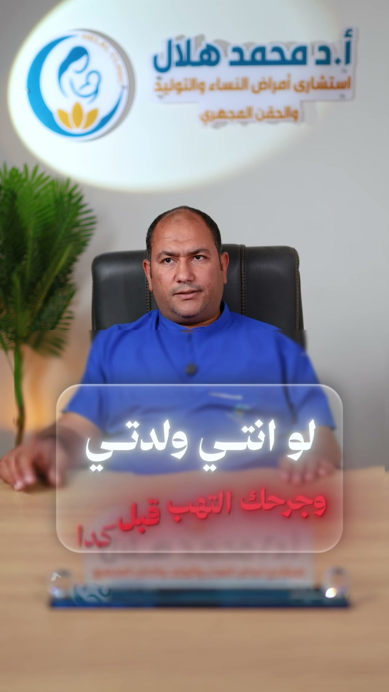
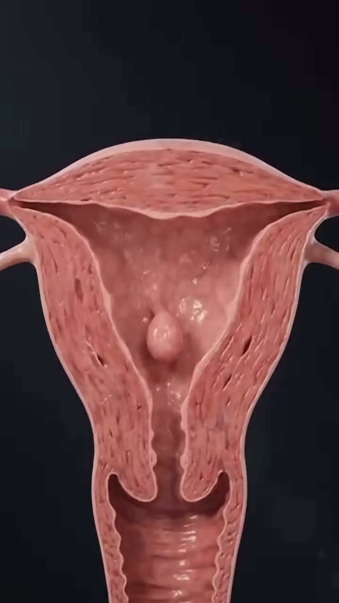
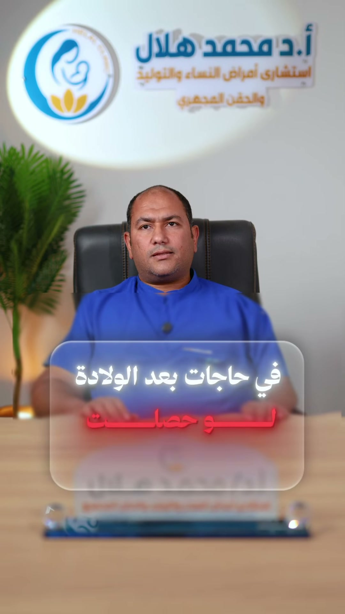

الحمل والولادة
متابعة الحمل والتخطيط للولادة، ومناقشة خيارات الولادة وتخفيف الألم حسب حالتكِ.

د. محمد هلالHELAL CLINICاحجزي موعدكِد. محمد هلال دكتور الفرحة
رعاية متخصصة لصحتكِ ورحلة الأمومة، مع استشاري أمراض النساء والتوليد والمناظير الجراحية والحقن المجهري.
اختاري المرحلة الأقرب لكِ، واكتشفي محتوى وخطوة زيارة تناسب اهتمامكِ.
خطوة واحدة، وبداية أوضح.
اختياراتكِ لترتيب المحتوى فقط، ولا تُحفظ في الموقع. التقييم الطبي يكون خلال الزيارة.
اختاري من المراحل فوق عشان نجهّز لكِ رحلتكِ.
اختاري الخدمة المناسبة، ودعينا نساعدكِ
في ترتيب أول خطوة.
متابعة الحمل والتخطيط للولادة، ومناقشة خيارات الولادة وتخفيف الألم حسب حالتكِ.
تقييم أسباب تأخر الإنجاب ومناقشة خيارات العلاج، بما فيها الحقن المجهري وأطفال الأنابيب.

استشارات المناظير النسائية وجراحات أورام الرحم والأورام الليفية، وفق تقييم الطبيب.
استشاري أمراض النساء والتوليد والمناظير الجراحية والحقن المجهري
رحلة العلاج تبدأ بالاستماع وفهم احتياجكِ. في عيادات د. محمد هلال، نساعدكِ على مناقشة الخيارات المناسبة لحالتكِ واتخاذ خطوتكِ القادمة بوضوح.
من محتوى الدكتور على فيسبوك،
إجابات قريبة لأسئلة تهمكِ.

الحمل والولادةد. محمد هلال · HELAL CLINIC
بعد الولادةد. محمد هلال · HELAL CLINIC
صحة المرأةد. محمد هلال · HELAL CLINIC
بعد الولادةد. محمد هلال · HELAL CLINICفيديوهات مختارة من صفحة الدكتور. المعلومات للتوعية العامة، والتقييم الطبي يكون خلال الاستشارة.
استكشفي مكتبة الريلز كاملةحددي الفرع الأقرب ونوع الزيارة.
تقويم بسيط وأوقات واضحة للاختيار.
بيانات مختصرة ثم رسالة نجاح للتجربة.
١٦٢٧ محور الكفراوي، الحي الثالث، فوق صيدلية د. عمر.
افتحي الموقع على Google Mapsالموقف، مجمع دار الثقة.
ابحثي عن العيادة على الخريطةبجوار بنزينة كساب.
ابحثي عن العيادة على الخريطةيرجى تأكيد مواعيد العمل وموقع الفرع مع فريق العيادة قبل الزيارة.
مقالات مختصرة، وأسئلة أوضح قبل الزيارة.
قائمة بسيطة تساعدكِ على ترتيب المعلومات والأسئلة قبل لقاء الطبيب.
كيف ترتّبين تاريخكِ الصحي والتقارير السابقة للاستشارة.
فهم الهدف من الإجراء والبدائل وخطوات المتابعة.
محتوى مبدئي للعرض يحتاج مراجعة الدكتور قبل النشر.
«عنده مصدقيه وامانه واحترام»مشاهدة المراجعات على جوجل
«دكتور شاطر جدا ربنا يباركلو»مشاهدة المراجعات على جوجل
«د محمد من افضل الناس علما وخلقا وعن تجربة»مشاهدة المراجعات على جوجل
مقتطفات من مراجعات منشورة على Google Maps. عرض ثابت؛ لا يتحدّث تلقائيًا.
كل التقييمات على جوجلاختاري الخدمة والفرع، ثم اليوم والوقت، وراجعي تفاصيل زيارتكِ في خطوات بسيطة.
010 1790 0354015 0901 1313الحجز هنا عرض للتصميم فقط. التأكيد الفعلي متاح بالتواصل مع العيادة.
اختاري الفرع والخدمة واليوم والوقت، ثم أدخلي بياناتكِ. التجربة الحالية للعرض فقط؛ للحجز الفعلي تواصلي مع العيادة.
خدي معكِ التقارير والتحاليل السابقة إن وُجدت، وقائمة الأدوية الحالية. اسألي فريق العيادة لو فيه تجهيزات خاصة لزيارتكِ.
المواعيد والأسعار هنا افتراضية لعرض التصميم. لا يتم تسجيل حجز فعلي، والحجز الحقيقي يتم بالتواصل مع العيادة.